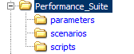

Раздел: Автоматизация > Практикум > Основные аспекты создания скриптов для нагрузочного тестирования
Основные аспекты создания скриптов для нагрузочного тестирования
1. Введение
Напомним, что само по себе нагрузочное тестирование - это автоматизированное тестирование, а значит это разработка, отладка, контрольный запуск и анализ результатов, а не просто запись и запуск (Record & Playback). В данной статье мы постараемся рассмотреть основные аспекты создания набора тест скриптов для нагрузочного тестирования, не углубляясь в технические особенности инструментов, языков программирования и технологий. Итак приступим.
Если мы хотим получить удобный для пользования и сопровождения набор тестовых скриптов, нам необходимо будет внедрить приемы обеспечения качества: использование стандартов, шаблонов и инструкций. Необходимо договориться об общем использовании одинаковой структуры каталогов, архитектуры скриптов, именовании функций, переменных, и транзакций. В итоге каждый участник группы, отвечающей за нагрузочное тестирование, будет знать архитектуру тестового набора, а также без труда сможет прочитать и внести необходимые изменения в скрипт, написанный другим тестировщиком.
2. Стандартизация тестового набора для тестирования производительности
Разрабатывая скрипты для нагрузочного тестирования, мы выполняем работу присущую программисту/разработчику, и поэтому должны следовать их правилам, выполняя все для обеспечения качества и надежности кода тестов. Очень часто для этого стоит провести консультации с разработчиками и с их помощью выработать основные правила создания тестовых скриптов.
В любом случае, свое внимание стоит обратить на следующие аспекты:
- Структура каталогов
- Архитектура (структура) тест скриптов
- Именование объектов
2.1 Структура каталогов тестового набора
Наличие одинаковой структуры каталогов значительно облегчает работу ([1] Страница 5). Вы всегда будете знать, где и что находится. Вам не придется искать, где же находятся, к примеру, параметры для тестового набора, написанного другим тестировщиком. Предлагаем Вам следующую структуру каталогов:

- parameters - директорий глобальных параметров тестового сценария (более подробное описание глобальных параметров смотрите ниже в разделе "название параметров")
- scripts - директорий хранения тестовых скриптов
- scenarios - директорий хранения сценариев или тестовой модели
2.2 Архитектура тест скриптов
Аналогично со структурой тест кейсов, скрипты для нагрузочного тестирования так же рекомендуется разделять на 3 части: precondition, test case action, postcondition. Данное разделение очень удобно, т.к. разные части тестов имеют разную частоту выполнения.
Тестовые скрипты в HP LoadRunner изначально разделены на 3 части:
- Init - используется для инициализации VUser, т.е. в него целесообразно помещать те части скрипта, которые не требуют постоянных повторений, такие как вход в тестируемую систему, конечно если мы не тестируем именно эту часть приложения. (Может быть пустым)
- Action - рабочая часть скрипта. В него помещают те действия, которые будут выполняться, и результаты которых будут измеряться и сохраняться, а в последствии анализироваться. (Количество блоков Action может быть разным, в зависимости от архитектуры тестового скрипта)
- End - корректное завершение теста.(Может быть пустым)
2.3 Соглашение об именовании
Программируя на разных языках, мы используем правила наименования (объектов, переменных, функций) присущие данному языку. В качестве примера рекомендуем ознакомиться с таковыми правилами для Java [4] (Ch. 3 Naming Conventions)
В автоматизированном тестирование, а в частности в тестировании производительности, есть некоторые специфические сущности, которые необходимо подвести под единую систему наименований. Рассмотрим основные:
- название скриптов
- названия параметров
- название транзакций
Примечание: при написании скриптов для автоматизированного тестирования вам необходимо будет пользоваться правилами наименования как используемого языка программирования, так и правилами наименований дополнительных сущностей, выработанными в вашей команде.
2.3.1 Названия тест скриптов
Для удобства работы с скриптами рекомендуется всем членам команды использовать одинаковый формат названий скриптов:
- формат - начинается с названия тестируемого действия, затем компонента. Каждое слово начинается с большой буквы, без пробелов
- символы - английский алфавит, цифры, подчеркивание
Пример: название скрипта по созданию компаний будет AddCompaign. Если компании надо создавать для заранее заданного количества пользователей (предположим - 100), то название будет следующим: AddCompaign_100
2.3.2 Названия параметров
Очень часто разные скрипты содержат одинаковые параметры. А если учесть, что параметры хранятся в файлах, то мы можем получить некоторое количество одинаковых файлов для нескольких VUser-ов. От этого можно и даже нужно избавляться, т.к. дублирование одинаковой информации не лучший паттерн.
Условно разобьем параметры на 2 типа:
- глобальные - параметры, использующиеся в большом количестве скриптов внутри сценария, например: хост тестируемого приложения, параметры доступа к БД и т.д. Глобальные параметры хранятся в каталоге parameters проектной директории. В скрипте же, путь к файлу параметров зададим относительно папки скрипта, а именно: "..\parameters\"
- локальные - параметры конкретного тестового скрипта. Хранятся внутри директории каждого конкретного скрипта VUser-а.
Названия параметрам рекомендуем давать с маленькой буквы, с возможным подчеркиванием как разделителем кейвордов.
2.3.3 Название транзакций
Для измерения производительности, необходимо определить необходимые транзакции. Каждая транзакция измеряет время, необходимое для получения ответа сервера на запрос виртуального пользователя. Для удобства чтения рекомендуется транзакции называть с большой буквы, начинается с кейворда TX [5], каждый последующий кейворд разделен подчеркиванием.
Пример: по аналогии с примером из пункта 2.3.1 Названия тест скриптов, название транзакций будет TX_ADD_COMPAIGN и TX_ADD_COMPAIGN_100 соответственно.
3. Порядок действий при разработке скриптов для тестирования производительности
Условно разобьем процесс разработки тестового набора на 3 фазы:
- Подготовка
- Создание и отладка
- Хранение
На каждой фазе перед разработчиком скриптов для тестирования будет стоять ряд задач, только после решения которых можно перейти к следующей стадии.
Далее рассмотрим более подробное описание фаз разработки тестовых скриптов для нагрузочного тестирования.
3.1 Подготовка
Задачи:
- анализ тестовой модели нагрузки
- анализ функциональной части скрипта, с целью понять, что тест должен делать и как
- выбор варианта создания скрипта:
- ручной, когда разработчик сам пишет функции, использующиеся в скрипте
- автоматический, когда скрипт записывается специальным инструментом
- комбинированный, когда скрипт сначала записывается, а потом параметризируется и усовершенствуется вручную
3.2 Создание и отладка
Задачи:
- создание шаблона скрипта (под шаблоном подразумевается не параметризованный скрипт, без каких-либо проверок)
- параметризация параметров скрипта
- добавление проверок в скрипт
- настройки параметров VUser-ов (скриптов) и окружения
- отладка при 1 итерации
- отладка при Х итерациях
- добавление скрипта в общий сценарий
- обновление глобальных параметров (при необходимости)
3.3 Хранение
Задачи:
- сохранение глобальных параметров - папка \parameters\
- сохранение сценариев- папка \scenarios\
- сохранение скриптов - папка \scripts\
Примечание: готовый тестовый набор должен быть доступен всем участникам проектной группы, для этого он должен быть сохранен в системе контроля версий (либо на совместно используемом сервере).
При использовании SVN [6] в качестве системы контроля версий, рекомендуется воспользоваться общепринятой организацией репозитория [7]:
/trunk - актуальная (последняя) версия тестового набора /branches - тестовые наборы, находящиеся в разработке /tags - завершенные тестовые наборы
Примечание: Для получения более детальной и точной информации о системе контроля версий рекомендуется обратиться к команде разработчиков. По работе с репозиторием любой программист будет рад провести короткий мастер-класс для QA.
В двух словах, порядок работы, используя репозиторий, будет следующий: создается новый branch для тестового набора, сохраняются в него новые тестовые скрипты или изменения, после завершения работы сливается (merge) все в trunk. Когда все участники команды залили результаты своей работы (скрипты, сценарии, параметры) в trunk, создается новый tag, как показатель завершенности некоторой версии тестового набора.
В итоге, структура каталогов репозитория будет следующая:
/perfSuite1 /trunk /parameters /scenarios /scripts /branches /branch1 /parameters /scenarios /scripts /branch2 /parameters /scenarios /scripts ... /tags /v0.1 /parameters /scenarios /scripts /v0.2 /parameters /scenarios /scripts ... /perfSuite2 /trunk ... /branches ... /tags ...
4. Конфигурация тестового набора для тестирования производительности
Тестовые наборы или сценарии тестирования конфигурируются на основании имеющихся моделей нагрузки. Для этого, хранящиеся в репозитории скрипты, группируют в сценарии и назначают требуемое количество виртуальных пользователей, для получения нужной нагрузки (в HP LoadRunner для этих целей используется Controller). Полученные файлы с конфигурацией сценариев сохраняют, также как и скрипты, в репозитории - папка \scenarios\.
Заметим, что предусловием для конфигурации тестового набора является подготовка необхдимых скриптов.
Задача:
- создание тестового набора (сценария) для нагрузочного тестирования
- конфигурация тестового набора
- отладка работы сценария
- сохранение тестового набора в репозитории
5. Вывод
Воспользовавшись, вышеуказанными рекомендациями по созданию тестового набора для нагрузочного тестирования, вы получите четкую, простую и понятную структуру тестовых скриптов, упростите себе задачу по написанию и поддержке их в рабочем состоянии, а также, используя общий репозиторий, вы получите доступ не только к готовым тестам, но и к тем, что находятся в разработке.
6. Литература
[1] HP LoadRunner software—tips and tricks for configuration, scripting and execution (https://www.sqa.its.state.nc.us/library/pdf/hp%20loadrunner%20best%20practices%20.pdf)
[2] Блог Алексея Булата “Про Тестинг” - стандартизируем нагрузочные тесты на LoadRunner
[3] Блог Алексея Булата “Про Тестинг” - методика создания нагрузочных тест-скриптов
[4] Java Coding Style Guide (http://www.cs.bilgi.edu.tr/pages/standards_project/java_CodingStyle.pdf)
[5] tx=transaction (http://www.proz.com/kudoz/english_to_polish/finance_general/1859198-tx.html)
[6] Subversion - version control system (http://subversion.apache.org/)
[7] Subversion - Branch Maintenance - Chapter 4. Branching and Merging - Repository Layout (http://svnbook.red-bean.com/en/1.1/ch04s07.html)
Автор: Алексей Булат
Обсудить статью в блоге автора